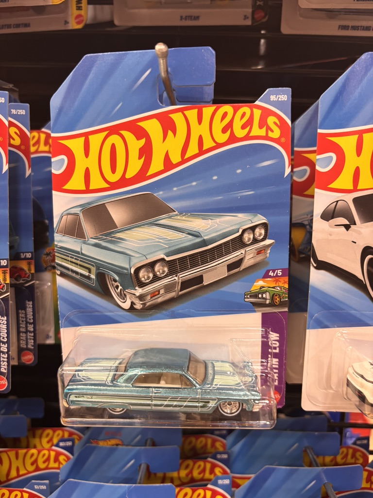
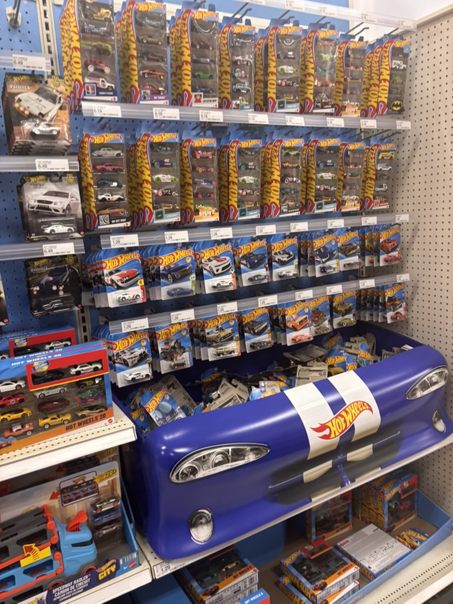
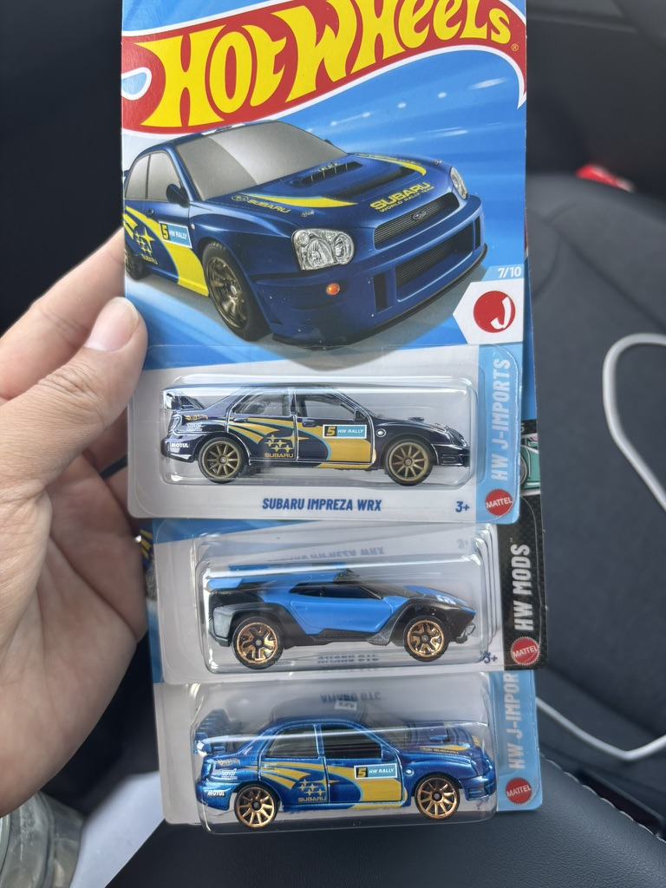

Where in California is a die-cast hunting trip worth starting?
Some people collect small die-cast toy cars, and the best part is the hunt: driving from store to store to check the toy aisle before anyone else does. Collectors call it peg hunting, after the hooks the cars hang on.
A good hunt needs plenty of stores within reach and few other hunters sharing them. This map scores every spot in California by the best round trip you could start there: darker red means better hunting.
Click anywhere to see that trip, or open Cities to see where I'd go.
A confession: I got hooked on die-cast cars, as an adult. It started a few months ago with an Impala on a peg at Safeway. It looked different from every other car there, so I looked it up at home: my very first find was a rare chase car. That was it for me.

It turns out I am far from alone. Almost every grocery store, dollar store and drugstore in the US has at least one peg of them, the big retailers give them a whole aisle, and the hunters range from kids to retirees.
The hook is the hunt, and it is a well-designed one. Mixed in with the regular cars, the makers hide rare chase versions: the same model with a special paint finish and real rubber tires. Nobody outside the factory knows the odds, only that they are very, very rare. The cars cost about a dollar, the variety never ends, and any peg might hold one. So you check the toy aisle every time you buy groceries, and some collectors plan whole trips around it.


I recently moved to Northern California, and hunting has become part of every drive I take to explore it. One pattern kept coming back: my best finds came from stores in the middle of nowhere. Up the coast on US-101 into Oregon I found some of my favourite cars; around the Bay Area and along I-5, almost nothing. The obvious explanation is competition: fewer hunters per peg, better odds.
So I tried to put a number on it. This map shares every store's pegs among the people who live within a short drive, then looks for the best round trip from every spot in California. The Bay Area came out as expected: about three times as many residents share each store in San Francisco as in Eureka. The surprise was I-5: per store, Redding and Red Bluff look about as good as the north coast. My guess is what the map cannot see. I-5 is the state's main truck and road-trip route, so hunters passing through, resellers included, may empty the pegs before the locals get there, and the map only counts residents.
It is a weekend side project and an exercise in "vibe coding": I built it with Claude Code. Treat a score as a reason to plan a road trip, not a promise.
California is divided into hexagons about 1 km across. Each one is coloured by the best trip that starts and ends there within 1, 2 or 3 hours, counting both the driving and the time spent inside each store. Click a hexagon to see that trip: the stops in order and the clock.
A trip's score reads as "about how many typical stores it is worth". A typical store is a Dollar Tree shared by the usual number of nearby residents. "≈ 8 typical stores' worth" means a trip as good as visiting eight of those.
Because the reference level is the same everywhere, scores compare across cities: the same chain is worth less in a crowded metro than in a town with few shoppers per store. Plain store count (under Map options) skips all of this and counts every store as 1.
Cities are 2020 census places with 10,000+ residents in 2025 (incorporated cities plus unincorporated communities, "CDP"), grouped by the Census Bureau's metro areas. A city's score is the median over its residents of the map's score where they live: half live where trips score higher, half lower. "People per shelf" is how many residents share each store within 10 minutes of a typical home.
A ⚑ marks a score to read with care: few stores (the best trips use fewer than 8 different stores, so one closing moves the score), uneven (the city's neighbourhoods differ a lot), or seasonal? (many homes per resident, so winter visitors and tourists who compete for the same stores are not counted). Easiest and hardest areas inside large cities are named after the nearest OpenStreetMap neighbourhood; they are approximate, not official boundaries.
Stock weight per chain, relative to a Dollar Tree = 1. This is my own judgement from hunting, not measured data; different weights would change which stores the trips favour.
| 2 | Walmart, Target, Fred Meyer most stock, plus premium and other die-cast lines |
| 1.5 | Safeway / Vons / Pavilions / Albertsons between the two |
| 1 | Dollar Tree, Dollar General, Family Dollar, Hobby Lobby mostly mainline only |
| 0.5 | Walgreens, CVS least stock |
A store with weight 2 counts as two stores: it draws twice the share of the residents who can reach it, and its value is doubled.
Drive times assume light traffic. They come from speed limits and road types in OpenStreetMap, with a short delay at each traffic light and no traffic data. Checked against Google Maps on 40 California trips, they match Google's best case; on a normal Saturday morning the drive takes about 20 % longer, up to 40 % on short city legs. A "2-hour" trip takes roughly 2 h 15–25 min in practice, more at rush hour. Comparisons between places are much less affected than the clock.
Data as of October 2026; it is not updated. Store names belong to their owners; this is a personal side project, not affiliated with any toy maker or retailer. The page sets no cookies and runs no analytics.